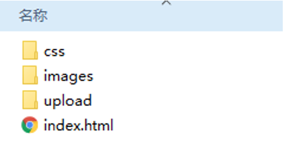

移动Web开发流程图

移动web开发之rem布局
rem单位
rem (root em)是一个相对单位，类似于em，em是父元素字体大小。
不同的是rem的基准是相对于html元素的字体大小。
比如，根元素（html）设置font-size=12px; 非根元素设置width:2rem; 则换成px表示就是24px。
rem的优势：父元素文字大小可能不一致， 但是整个页面只有一个html，可以很好来控制整个页面的元素大小。
媒体查询
什么是媒体查询
媒体查询（Media Query）是CSS3新语法。
- 使用 @media查询，可以针对不同的媒体类型定义不同的样式
- @media 可以针对不同的屏幕尺寸设置不同的样式
- 重置浏览器大小的过程中，页面也会根据浏览器的宽度和高度重新渲染页面
媒体查询语法规范
- 用 @media开头 注意@符号
- mediatype 媒体类型
- 关键字 and not only
- media feature 媒体特性必须有小括号包含
1 | @media mediatype and|not|only (media feature) { |
- mediatype 查询类型
将不同的终端设备划分成不同的类型，称为媒体类型
- 关键字
关键字将媒体类型或多个媒体特性连接到一起做为媒体查询的条件。
- and：可以将多个媒体特性连接到一起，相当于“且”的意思。
- not：排除某个媒体类型，相当于“非”的意思，可以省略。
- only：指定某个特定的媒体类型，可以省略。
媒体特性
每种媒体类型都具体各自不同的特性，根据不同媒体类型的媒体特性设置不同的展示风格。我们暂且了解三个。
注意他们要加小括号包含

媒体查询书写规则
注意： 为了防止混乱，媒体查询我们要按照从小到大或者从大到小的顺序来写,但是我们最喜欢的还是从小到大来写，这样代码更简洁
less 基础
维护css弊端
CSS 是一门非程序式语言，没有变量、函数、SCOPE（作用域）等概念。
- CSS 需要书写大量看似没有逻辑的代码，CSS 冗余度是比较高的。
- 不方便维护及扩展，不利于复用。
- CSS 没有很好的计算能力
- 往往会因为缺少 CSS 编写经验而很难写出组织良好且易于维护的 CSS 代码项目。
Less 介绍
Less（LeanerStyle Sheets 的缩写）是一门 CSS扩展语言，也成为CSS预处理器。
做为 CSS的一种形式的扩展，它并没有减少CSS的功能，而是在现有的CSS语法上，为CSS加入程序式语言的特性。
它在CSS 的语法基础之上，引入了变量，Mixin（混入），运算以及函数等功能，大大简化了 CSS 的编写，并且降低了 CSS的维护成本，就像它的名称所说的那样，Less可以让我们用更少的代码做更多的事情。
常见的CSS预处理器：Sass、Less、Stylus
一句话：Less是一门 CSS 预处理语言，它扩展了CSS的动态特性。
Less安装
①安装nodejs，可选择版本(8.0)，网址：http://nodejs.cn/download/
②检查是否安装成功，使用cmd命令（win10是window+r 打开运行输入cmd） —输入“node –v”查看版本即可
③基于nodejs在线安装Less，使用cmd命令“npm install -g less”即可
④检查是否安装成功，使用cmd命令“ lessc -v ”查看版本即可
Less 使用之变量
变量是指没有固定的值，可以改变的。因为我们CSS中的一些颜色和数值等经常使用。
1 | @变量名:值; |
- 必须有@为前缀
- 不能包含特殊字符
- 不能以数字开头
- 大小写敏感
1 | @color: pink; |
Less 编译 vocode Less 插件
Easy LESS 插件用来把less文件编译为css文件
安装完毕插件，重新加载下 vscode。
只要保存一下Less文件，会自动生成CSS文件。

Less 嵌套
1 | // 将css改为less |
如果遇见 （交集|伪类|伪元素选择器） ，利用&进行连接
1 | a:hover{ |
Less 运算
任何数字、颜色或者变量都可以参与运算。就是Less提供了加（+）、减（-）、乘（*）、除（/）算术运算。
1 | /*Less 里面写*/ |
- 乘号（*）和除号（/）的写法
- 运算符中间左右有个空格隔开 1px + 5
- 对于两个不同的单位的值之间的运算，运算结果的值取第一个值的单位
- 如果两个值之间只有一个值有单位，则运算结果就取该单位
rem适配方案
1.让一些不能等比自适应的元素，达到当设备尺寸发生改变的时候，等比例适配当前设备。
2.使用媒体查询根据不同设备按比例设置html的字体大小，然后页面元素使用rem做尺寸单位，当html字体大小变化元素尺寸也会发生变化，从而达到等比缩放的适配。
技术方案：
1.less+rem+媒体查询
2.lflexible.js+rem
总结：
两种方案现在都存在。
方案2 更简单，现阶段大家无需了解里面的js代码。
rem实际开发适配方案1
①假设设计稿是750px
②假设我们把整个屏幕划分为15等份（划分标准不一可以是20份也可以是10等份）
③每一份作为html字体大小，这里就是50px
④那么在320px设备的时候，字体大小为320/15就是 21.33px
⑤用我们页面元素的大小除以不同的 html字体大小会发现他们比例还是相同的
⑥比如我们以750为标准设计稿
⑦一个100100像素的页面元素在 750屏幕下， 就是 100/ 50 转换为rem 是 2rem2rem 比例是1比1
⑧320屏幕下， html字体大小为21.33 则 2rem= 42.66px 此时宽和高都是 42.66 但是宽和高的比例还是 1比1
⑨但是已经能实现不同屏幕下 页面元素盒子等比例缩放的效果
总结：
①最后的公式：页面元素的rem值 = 页面元素值（px） / （屏幕宽度 / 划分的份数）
②屏幕宽度/划分的份数就是 htmlfont-size 的大小
③或者：页面元素的rem值 = 页面元素值（px） / html font-size 字体大小

3、设置视口标签以及引入初始化样式
1 | <meta name="viewport" content="width=device-width, user-scalable=no, initial-scale=1.0, maximum-scale=1.0, minimum-scale=1.0"> |
4、设置公共common.less文件
- 新建common.less 设置好最常见的屏幕尺寸，利用媒体查询设置不同的html字体大小，因为除了首页其他页面也需要
- 我们关心的尺寸有 320px、360px、375px、384px、400px、414px、424px、480px、540px、720px、750px
- 划分的份数我们定为 15等份
- 因为我们pc端也可以打开我们苏宁移动端首页，我们默认html字体大小为 50px，注意这句话写到最上面
rem 适配方案2
手机淘宝团队出的简洁高效 移动端适配库
我们再也不需要在写不同屏幕的媒体查询，因为里面js做了处理
它的原理是把当前设备划分为10等份，但是不同设备下，比例还是一致的。
我们要做的，就是确定好我们当前设备的html 文字大小就可以了
比如当前设计稿是 750px， 那么我们只需要把 html 文字大小设置为 75px(750px / 10) 就可以
里面页面元素rem值： 页面元素的px 值 / 75
剩余的，让flexible.js来去算
github地址：https://github.com/amfe/lib-flexible
总结：
因为flexible是默认将屏幕分为10等分
但是当屏幕大于750的时候希望不要再去重置html字体了
所以要自己通过媒体查询设置一下
并且要把权重提到最高


移动端WEB开发之响应式布局
响应式开发原理
就是使用媒体查询针对不同宽度的设备进行布局和样式的设置，从而适配不同设备的目的。
设备的划分情况：
- 小于768的为超小屏幕（手机）
- 768~992之间的为小屏设备（平板）
- 992~1200的中等屏幕（桌面显示器）
- 大于1200的宽屏设备（大桌面显示器）
1.2 响应式布局容器
响应式需要一个父级做为布局容器，来配合子级元素来实现变化效果。
原理就是在不同屏幕下，通过媒体查询来改变这个布局容器的大小，再改变里面子元素的排列方式和大小，从而实现不同屏幕下，看到不同的页面布局和样式变化。
父容器版心的尺寸划分
- 超小屏幕（手机，小于 768px）：设置宽度为 100%
- 小屏幕（平板，大于等于 768px）：设置宽度为 750px
- 中等屏幕（桌面显示器，大于等于 992px）：宽度设置为 970px
- 大屏幕（大桌面显示器，大于等于 1200px）：宽度设置为 1170px
但是我们也可以根据实际情况自己定义划分
2.0 bootstrap的介绍
2.1Bootstrap简介
Bootstrap 来自 Twitter（推特），是目前最受欢迎的前端框架。Bootstrap 是基于HTML、CSS 和 JAVASCRIPT 的，它简洁灵活，使得 Web 开发更加快捷。
框架：顾名思义就是一套架构，它有一套比较完整的网页功能解决方案，而且控制权在框架本身，有预制样式库、组件和插件。使用者要按照框架所规定的某种规范进行开发。
2.2 bootstrap优点
- 标准化的html+css编码规范
- 提供了一套简洁、直观、强悍的组件
- 有自己的生态圈，不断的更新迭代
- 让开发更简单，提高了开发的效率
2.3 版本简介
2.x.x：停止维护,兼容性好,代码不够简洁，功能不够完善。
3.x.x：目前使用最多,稳定,但是放弃了IE6-IE7。对 IE8 支持但是界面效果不好,偏向用于开发响应式布局、移动设备优先的WEB 项目。
4.x.x：最新版，目前还不是很流行
2.4 bootstrap基本使用
在现阶段我们还没有接触JS相关课程，所以我们只考虑使用它的样式库。
Bootstrap 使用四步曲：
创建文件夹结构

创建 html 骨架结构
1
2
3
4
5
6
7
8
9
10
11
12
13
14
15
16
17
18
19
20
21
22
23
24
25
26
27
28<!DOCTYPE html>
<html lang="zh-CN">
<head>
<meta charset="utf-8">
<meta http-equiv="X-UA-Compatible" content="IE=edge">
<meta name="viewport" content="width=device-width, initial-scale=1">
<!-- 上述3个meta标签*必须*放在最前面，任何其他内容都*必须*跟随其后！ -->
<title>Bootstrap 101 Template</title>
<!-- Bootstrap -->
<link href="css/bootstrap.min.css" rel="stylesheet">
<!-- HTML5 shim and Respond.js for IE8 support of HTML5 elements and media queries -->
<!-- WARNING: Respond.js doesn't work if you view the page via file:// -->
<!--[if lt IE 9]>
<script src="//cdn.bootcss.com/html5shiv/3.7.2/html5shiv.min.js"></script>
<script src="//cdn.bootcss.com/respond.js/1.4.2/respond.min.js"></script>
<![endif]-->
</head>
<body>
<h1>你好，世界！</h1>
<!-- jQuery (necessary for Bootstrap's JavaScript plugins) -->
<script src="//cdn.bootcss.com/jquery/1.11.3/jquery.min.js"></script>
<!-- Include all compiled plugins (below), or include individual files as needed -->
<script src="js/bootstrap.min.js"></script>
</body>
</html>
引入相关样式文件
1
2<!-- Bootstrap 核心样式-->
<link rel="stylesheet" href="bootstrap/css/bootstrap.min.css">
书写内容
直接拿Bootstrap 预先定义好的样式来使用
修改Bootstrap 原来的样式，注意权重问题
学好Bootstrap 的关键在于知道它定义了哪些样式，以及这些样式能实现什么样的效果
2.5 bootstrap布局容器
Bootstrap 需要为页面内容和栅格系统包裹一个 .container 或者.container-fluid 容器，它提供了两个作此用处的类。
.container
- 响应式布局的容器 固定宽度
- 大屏 ( >=1200px) 宽度定为 1170px
- 中屏 ( >=992px) 宽度定为 970px
- 小屏 ( >=768px) 宽度定为 750px
- 超小屏 (100%)
.container-fluid
- 流式布局容器 百分百宽度
- 占据全部视口（viewport）的容器。
2.6 bootstrap栅格系统
Bootstrap提供了一套响应式、移动设备优先的流式栅格系统，随着屏幕或视口（viewport）尺寸的增加，系统会自动分为最多12列。
栅格系统用于通过一系列的行（row）与列（column）的组合来创建页面布局，你的内容就可以放入这些创建好的布局中。
- 按照不同屏幕划分为1~12 等份
- 行（row） 可以去除父容器作用15px的边距
- xs-extra small：超小； sm-small：小； md-medium：中等； lg-large：大；
- 列（column）大于 12，多余的“列（column）”所在的元素将被作为一个整体另起一行排列
- 每一列默认有左右15像素的 padding
- 可以同时为一列指定多个设备的类名，以便划分不同份数 例如 class=”col-md-4 col-sm-6”
栅格嵌套
栅格系统内置的栅格系统将内容再次嵌套。简单理解就是一个列内再分成若干份小列。我们可以通过添加一个新的 .row 元素和一系列 .col-sm-* 元素到已经存在的 .col-sm-*
元素内。
1 | <!-- 列嵌套 --> |
列偏移
使用 .col-md-offset-* 类可以将列向右侧偏移。这些类实际是通过使用 * 选择器为当前元素增加了左侧的边距（margin）。
1 | <!-- 列偏移 --> |
列排序
通过使用 .col-md-push-* 和 .col-md-pull-* 类就可以很容易的改变列（column）的顺序。
1 | <!-- 列排序 --> |
响应式工具
为了加快对移动设备友好的页面开发工作，利用媒体查询功能，并使用这些工具类可以方便的针对不同设备展示或隐藏页面内容。